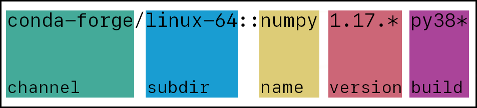

软件包搜索和安装规范#
Package search and install specifications
Conda 支持以下用于 conda search 和 conda install 的规范写法。
Conda supports the following specifications for conda search and conda install.
软件包搜索#
Package search
可以通过多种方式使用 conda search 来搜索特定软件包或软件包集合。本节介绍了标准规范（standard specification）以及键值对（key-value pair）的使用方式。
conda search for a specific package or set of packages can be accomplished in several ways. This section includes information on the standard specification and the use of key-value pairs.
标准规范#
Standard specification
{kind=link}

- channel
（可选）可以是频道名称或 URL。频道名称可包含字母、数字、短横线和下划线。
- subdir
（可选）频道的子目录。许多子目录用于表示不同的体系架构，但并非必须。必须在其前面提供频道名和斜杠，例如：
main/noarch。- name
（必需）软件包名称。可包含
*通配符。例如，*py*将返回所有名称中包含 "py" 的软件包，如 "numpy"、"pytorch"、"python" 等。- version
（可选）软件包版本。可包含
*通配符，或使用单引号括起的版本范围。例如：numpy=1.17.*将返回所有版本包含 "1.17." 的 numpy 包，numpy>1.17,<1.19.2将返回版本大于 1.17 且小于 1.19.2 的 numpy 包。- build
（可选）软件包构建名称。可包含
*通配符。例如：numpy 1.17.3 py38*将返回所有版本为 1.17.3 且构建名称中包含 "py38" 的 numpy 包。
- channel
(Optional) Can either be a channel name or URL. Channel names may include letters, numbers, dashes, and underscores.
- subdir
(Optional) A subdirectory of a channel. Many subdirs are used for architectures, but this is not required. Must have a channel and backslash preceding it. For example:
main/noarch- name
(Required) Package name. May include the
*wildcard. For example,*py*returns all packages that have "py" in their names, such as "numpy", "pytorch", "python", etc.- version
(Optional) Package version. May include the
*wildcard or a version range(s) in single quotes. For example:numpy=1.17.*returns all numpy packages with a version containing "1.17." andnumpy>1.17,<1.19.2returns all numpy packages with versions greater than 1.17 and less than 1.19.2.- build
(Optional) Package build name. May include the
*wildcard. For example,numpy 1.17.3 py38*returns all version 1.17.3 numpy packages with a build name that contains the text "py38".
键值对#
Key-value pairs
还可以使用称为“键值对表示法（key-value pair notation）”的语法进行软件包搜索，它的规则与 Standard specification 示例图略有不同。下面的搜索语法将返回与标准规范相同的软件包列表。
$ conda search "numpy[channel=conda-forge, subdir=linux-64, version=1.17.*, build=py38*]"
键值对语法支持以下键值字段：
- build # validated via GlobStrMatch
- build_number # validated via BuildNumberMatch
- channel # validated via ChannelMatch
- features # validated via FeatureMatch
- fn # validated via ExactStrMatch
- license # validated via CaseInsensitiveStrMatch
- license_family # validated via CaseInsensitiveStrMatch
- md5 # validated via ExactStrMatch
- name # validated via GlobLowerStrMatch
- sha256 # validated via ExactStrMatch
- subdir # validated via ExactStrMatch
- track_features # validated via FeatureMatch
- url # validated via ExactStrMatch
- version # validated via VersionSpec
标准语法与键值对语法可以同时使用。
$ conda search "conda-forge::numpy=1.17.3[subdir=linux-64, build=py38*]"
警告
如果同时使用标准语法和键值对语法，键值对语法中的字段值将覆盖标准语法中的对应值。例如： conda search numpy 1.17.3[version=1.19.2] 将返回版本为 1.19.2 的软件包。
Package searches can also be performed using what is called "key-value pair notation", which has different rules than the Standard specification example image. The search below will return the same list of packages as the standard specification.
$ conda search "numpy[channel=conda-forge, subdir=linux-64, version=1.17.*, build=py38*]"
This notation supports the following key-value pairs:
- build # validated via GlobStrMatch
- build_number # validated via BuildNumberMatch
- channel # validated via ChannelMatch
- features # validated via FeatureMatch
- fn # validated via ExactStrMatch
- license # validated via CaseInsensitiveStrMatch
- license_family # validated via CaseInsensitiveStrMatch
- md5 # validated via ExactStrMatch
- name # validated via GlobLowerStrMatch
- sha256 # validated via ExactStrMatch
- subdir # validated via ExactStrMatch
- track_features # validated via FeatureMatch
- url # validated via ExactStrMatch
- version # validated via VersionSpec
Key-value pair notation can be used at the same time as standard notation.
$ conda search "conda-forge::numpy=1.17.3[subdir=linux-64, build=py38*]"
警告
Any search values using the key-value pair notation will override values in the rest of the search string. For example, conda search numpy 1.17.3[version=1.19.2] will return packages with the version 1.19.2.
软件包安装#
Package installation
在安装软件包时，Conda 推荐尽可能明确指定。使用 * 通配符或版本范围很可能会引发冲突。
不过，在安装命令中 适当使用 * 通配符仍可能带来帮助。
When you're installing packages, conda recommends being as concrete as possible. Using * wildcards and version ranges during an install will most likely cause a conflict.
However, * wildcards can still be helpful in an install command when used sparingly.
使用通配符安装#
Installing with wildcards
假设你在开发的项目需要某个软件包的 2.3 版本。如果你升级到 2.4 或 3.0，项目将会出错。你使用环境文件来创建环境。
在版本号 2.3.1 中， 2 是主版本（major）， 3 是次版本（minor）， 1 是补丁（patch）。补丁通常包含 bug 修复。因此，如果你希望环境始终维持在 2.3 的范围内，不升级到 2.4 或 3.0，但又希望获得 bug 修复更新，那么在环境文件中使用 2.3.* 将非常有帮助。
Let's say you are working on a project that requires version 2.3 of a package. If you upgrade to 2.4 or 3.0, your project will break. You're also using an environment file to create your environment.
In the version 2.3.1, 2 is the major version, 3 is the minor version, and 1 is the patch. Patches typically contain bug fixes, so if you want to keep version 2.3 in your environment without updating to 2.4 or 3.0, but want to take advantage of any bug fixes, using 2.3.* in your environment file would be helpful to you.
具体安装示例#
Concrete install example
我们可以参考前文 Package search 小节中的搜索示例：
$ conda search "conda-forge/linux-64::numpy 1.17.* py38*"
该命令将返回如下结果：
Loading channels: done
# Name Version Build Channel
numpy 1.17.3 py38h95a1406_0 conda-forge
numpy 1.17.5 py38h18fd61f_1 conda-forge
numpy 1.17.5 py38h95a1406_0 conda-forge
你可以根据需要选择特定版本和构建，然后更新你的 conda install 命令，例如：
$ conda install "conda-forge/linux-64::numpy 1.17.5 py38h95a1406_0"
Let's take the search from the Package search section.
$ conda search "conda-forge/linux-64::numpy 1.17.* py38*"
This returns the following:
Loading channels: done
# Name Version Build Channel
numpy 1.17.3 py38h95a1406_0 conda-forge
numpy 1.17.5 py38h18fd61f_1 conda-forge
numpy 1.17.5 py38h95a1406_0 conda-forge
You can then choose a specific version and build, if necessary, and edit your conda install command accordingly.
$ conda install "conda-forge/linux-64::numpy 1.17.5 py38h95a1406_0"